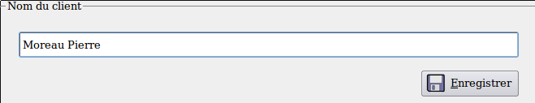
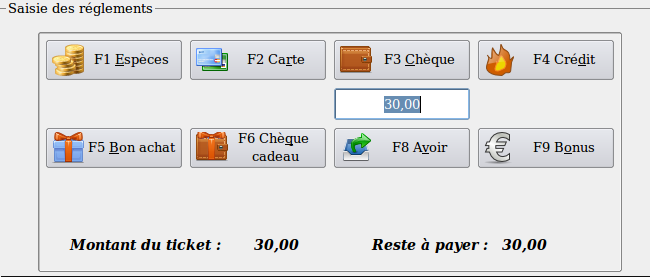
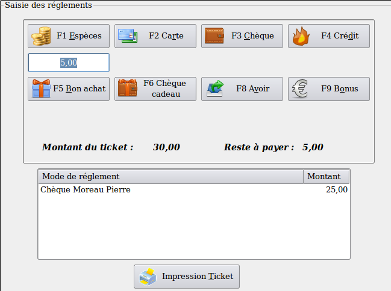
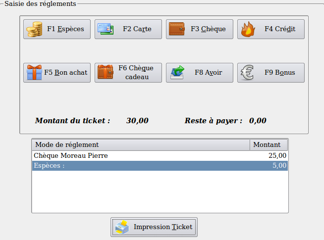
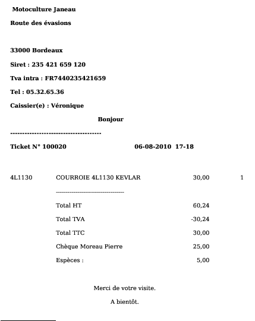

~ Laurux.Pos ~

~ Laurux.Pos ~ |
|
|
|
Saisie d'un ticket avec règlements multiples.
Dans le cas d'un règlement effectué sur différents modes on saisira en dernier le règlement "Espèces" puisque le programme affiche le montant à rendre.
1- Saisir le premier mode de réglement. Dans le cas d'un règlement par carte ou par chèque le programme proposera une fenêtre de saisie du nom du client qui apparaitra sur les bordereaux de remises.

Après l'enregistrement du nom du client il faudra modifier la zone montant car le monatnt du chèque est différent de celui du ticket.

Si le chèque est de 25 euros alors on saisira ce montant puis on validera.

1- Saisir le mode de réglement suivant. On voit qu'il reste 5 euros à payer, Saisir un nouveau mode de règlement, par exemple "Espèces" et saisir le montant donné par le client.


----------------------------------------------------------------------------------------------------------------------